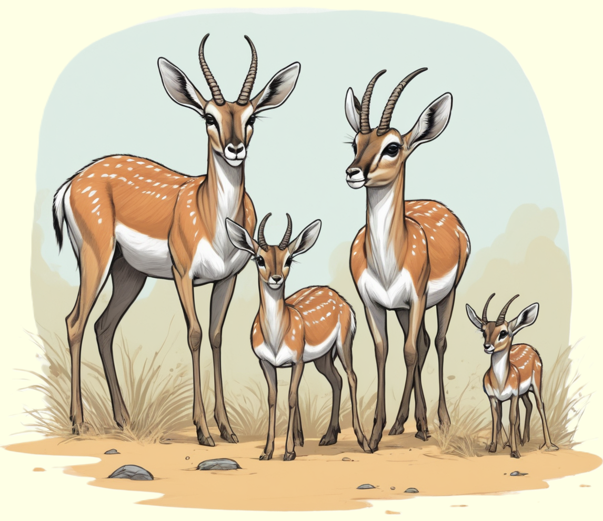

Antilopen, schlanke und elegante Tiere, zeichnen sich durch ihre schnellen Beine und
beeindruckenden Hörner aus.
Entdecke spannende Details über diese faszinierenden Lebewesen der Wildnis!

Schnelle Sprinter der Savanne
Antilopen sind faszinierende Tiere, die in den weiten Ebenen der Savannen und Steppen Afrikas
sowie in anderen Teilen der Welt leben. Diese schlanken und anmutigen Geschöpfe gehören zu
den Huftieren und haben erstaunliche Anpassungen, die ihnen helfen, in ihren Lebensräumen
zu überleben.
Antilopen sind für ihre Schnelligkeit bekannt. Mit schlanken Beinen können sie in
atemberaubendem Tempo rennen, um Raubtieren zu entkommen. Auch ihre Hörner setzten sie manchmal
zur Verteidigung ein. Die Hörner der Antilopen sind nicht nur ein wichtiges Werkzeug,
sondern auch ein wichtiges Merkmal, das ihnen hilft, sich von anderen Tieren zu unterscheiden.
Gesellige Herdentiere
Antilopen leben oft in Herden, die von einem dominanten Männchen oder einer Gruppe von Weibchen
geführt werden. Diese Herden bieten nicht nur Schutz vor Raubtieren, sondern ermöglichen es
den Antilopen auch, miteinander zu kommunizieren und soziale Bindungen zu knüpfen.
In der Gruppe können sie sich vor Gefahren warnen und sich gemeinsam auf die Suche nach
Nahrung begeben.
Antilopen ernähren sich hauptsächlich von Gräsern und Pflanzen. Ihre scharfen Sinne,
insbesondere das ausgezeichnete Gehör und der scharfe Blick, helfen ihnen,
potenzielle Gefahren frühzeitig zu erkennen. Dieses harmonische Zusammenleben zeigt,
wie wichtig es ist, die Natur und die Lebensräume der Antilopen zu schützen,
damit sie weiterhin in freier Wildbahn existieren können.